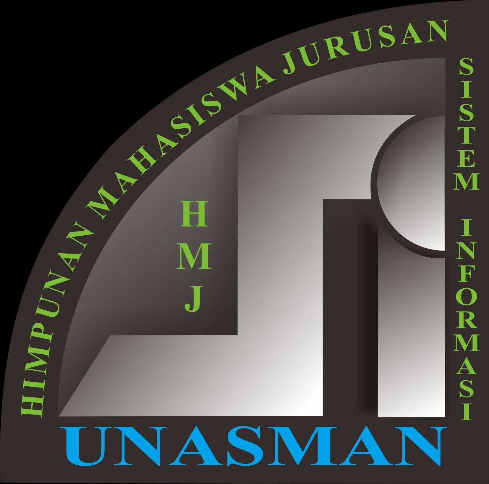
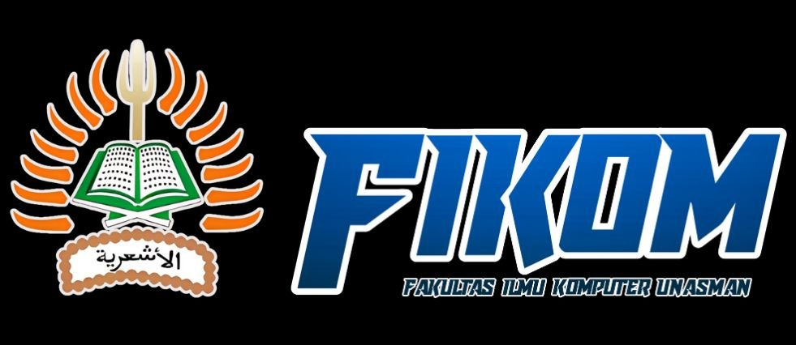

Belajar
tanpa batas.
Forum, workshop, dan sharing session yang membuka akses ke skill baru.
Explore ↗
HMJSIUNASMAN / SISTEM INFORMASI
Sistem Informasi / 2026
Ruang tumbuh mahasiswa Sistem Informasi UNASMAN untuk belajar lebih cepat, berkolaborasi lebih luas, dan membangun dampak yang nyata.
HMJSI adalah ekosistem kecil dengan energi besar. Kami menyatukan mahasiswa Sistem Informasi yang ingin mengubah rasa ingin tahu menjadi kemampuan.
Lewat kelas, proyek, diskusi, dan kegiatan sosial, setiap anggota punya ruang untuk mencoba, gagal, dan kembali tumbuh bersama.
Tentang perjalanan kami ↗Semua yang kamu butuhkan untuk bertumbuh sebagai mahasiswa, kreator, dan calon profesional digital.
Forum, workshop, dan sharing session yang membuka akses ke skill baru.
Explore ↗Temukan partner, bentuk tim, dan bawa ide menjadi proyek nyata.
Explore ↗Perluas jaringan dengan alumni, komunitas, dan dunia industri.
Explore ↗Program kerja HMJSI dirancang seperti sistem: terukur, kolaboratif, dan terus berkembang.
Berbagai karakter, satu arah. Inilah orang-orang yang membuat HMJSI terus hidup.
Informasi penerimaan mahasiswa baru FIKOM UNASMAN tahun akademik 2026/2027 untuk calon mahasiswa Sistem Informasi.
Pelajari teknologi dan manajemen informasi, analisis serta pengembangan aplikasi, dan siapkan diri untuk karier digital.